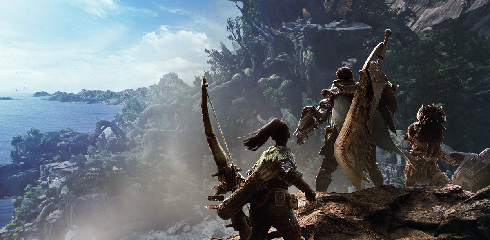

Beta available from Friday, January 19 at 2 a.m. (UTC) to Monday, January 22 at 1:59 a.m. (UTC)!
For this third and final round of the beta, we're adding a new quest featuring the fearsome Nergigante! Take this last opportunity to dive into the new world of Monster Hunter ahead of the game's release!
The Beta will use worldwide multiplayer matchmaking to test server load for the upcoming release. Based on the results of the last two betas, we've decided to test server load one last time.
All PlayStation®4 users with an internet connection to PlayStation™Network can participate, so don't miss out!
Four Different Quests
"The Insatiable Nergigante"
Nergigante Hunt
Locale: Wildspire Waste
Nergigante Hunt
Locale: Wildspire Waste
"Great Devourer, Great Jagras"
Great Jagras Hunt
Locale: Ancient Forest
Great Jagras Hunt
Locale: Ancient Forest
"Wildspire Rampage"
Barroth Hunt
Locale: Wildspire Waste
Barroth Hunt
Locale: Wildspire Waste
"The Ancient Forest Menace"
Anjanath Hunt
Locale: Ancient Forest
Anjanath Hunt
Locale: Ancient Forest
You can get special bonuses for participating in the beta!
Note: Each participation bonus can be earned only once across all beta tests.
Face Paint
Completing any of the four quests featured in the beta will earn you one Face Paint to customize your character with in the full retail version.
Item Sets
Completing each of the four quests for the first time will earn you item sets you can use in the full retail version. Items include lifepowder, max potions, shock traps, and lots more that will help you out on the hunt!

Setting
Once every decade, elder dragons trek across the sea to travel to the land known as the New World in a migration referred to as the Elder Crossing.
To get to the bottom of this mysterious phenomenon, the Guild has formed the Research Commission, dispatching them in large fleets to the New World.
As the Commission sends its Fifth Fleet in pursuit of the colossal elder dragon known as Zorah Magdaros, one hunter is about to embark on a journey grander than anything they could have ever imagined.
